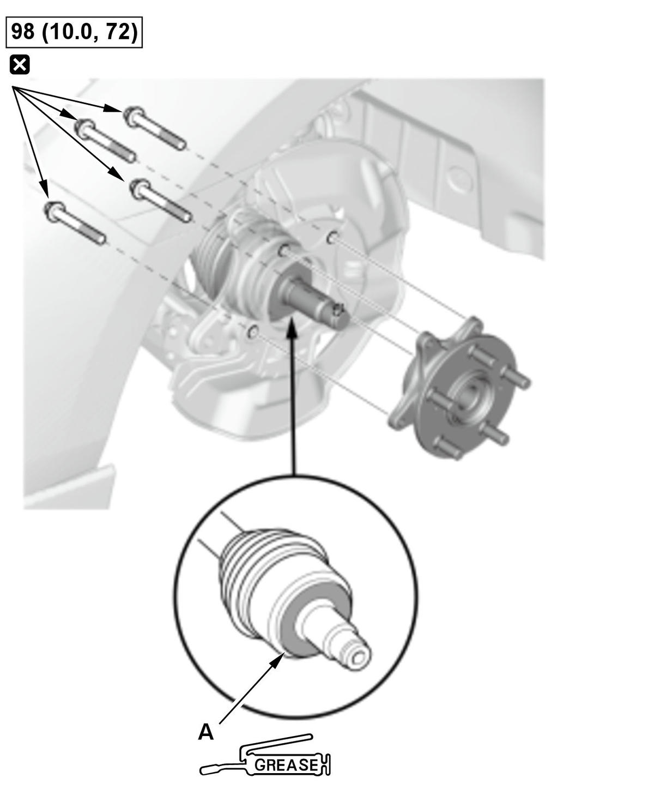
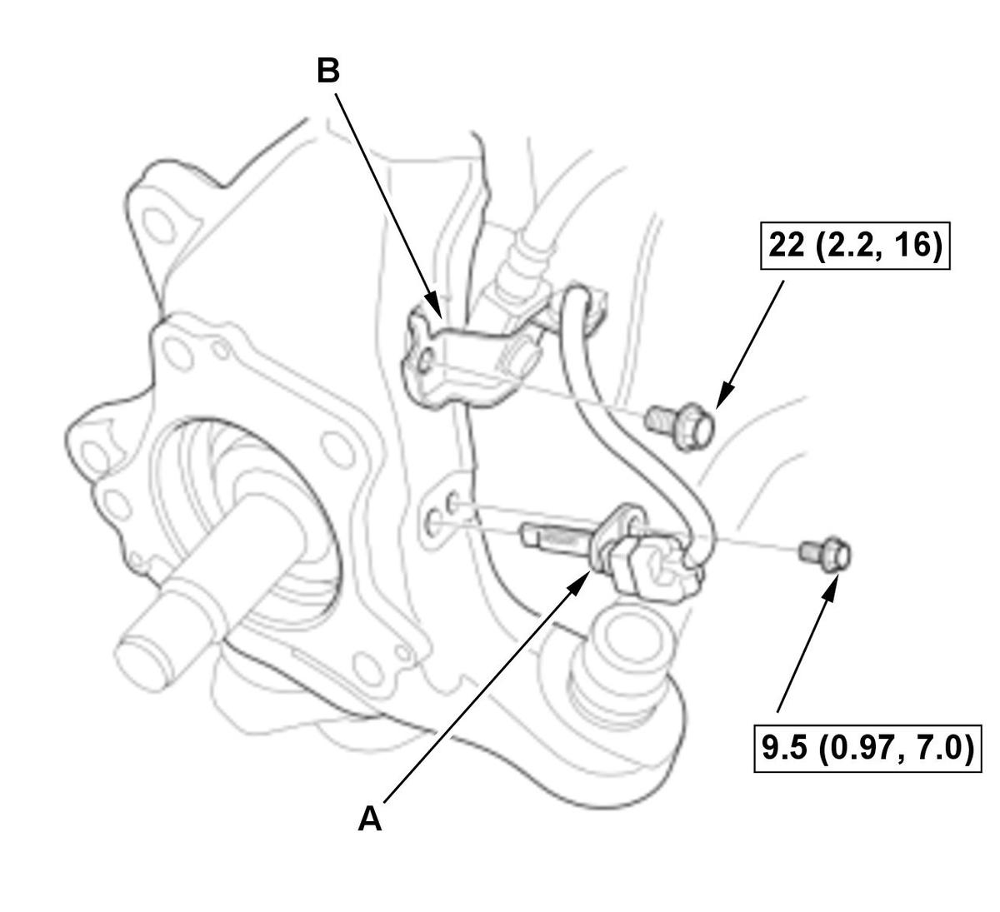
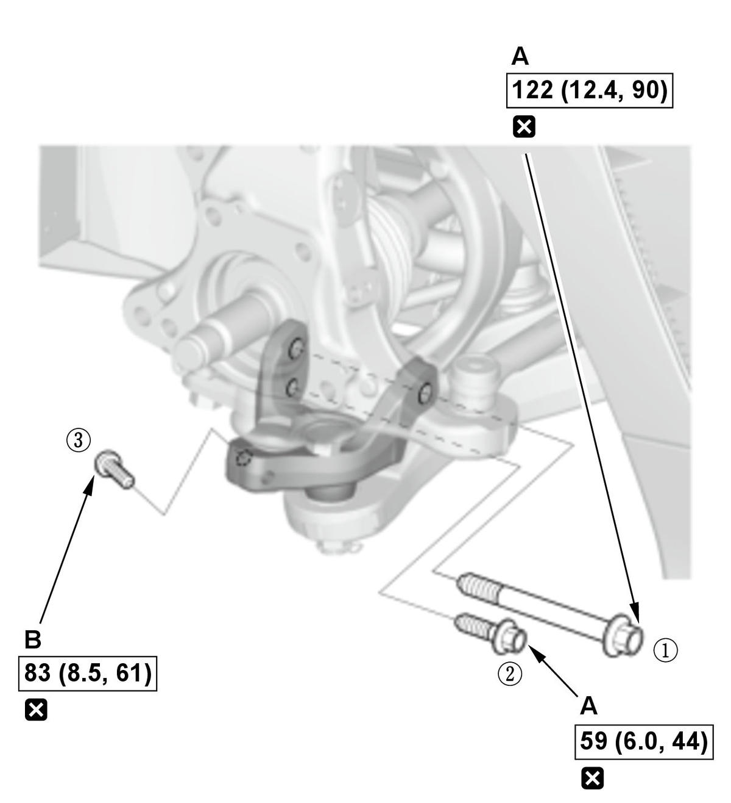
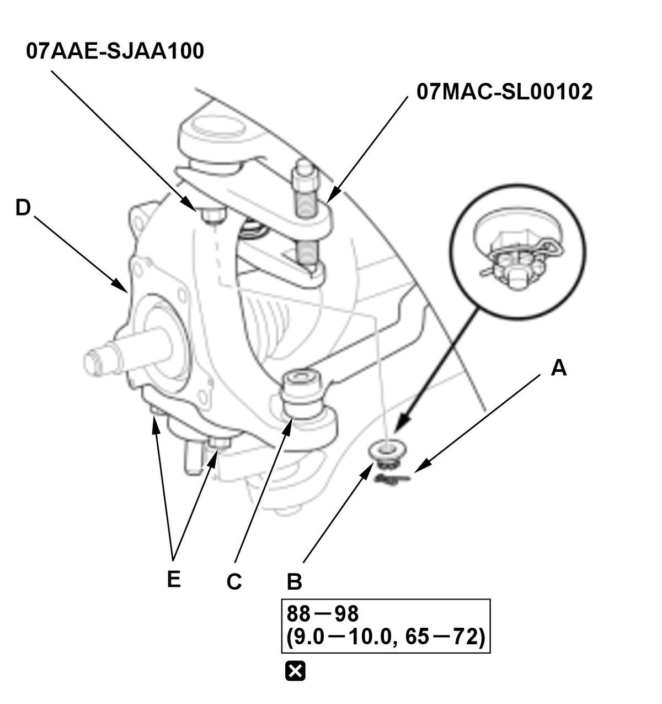

Removal and Installation
NOTE:
- How to read the torque specifications .
- Refer to the Exploded View as needed during the following procedures.
Hub Bearing Unit
- Vehicle - Lift
- Front Wheel - Remove
- Front Brake Caliper - Remove
- Brake Disc - Remove
- Spindle Nut - Remove
- Hub Bearing Unit - Remove

Courtesy of HONDA, U.S.A., INC.NOTE:
- Keep the wheel bearing/encoder away from any magnetic field. The encoder can be damaged or erased.
- Do not pull the driveshaft end outward. The inner driveshaft inboard joint may come apart.
- During installation, note these items.
-
- Use the new mounting bolts.
- Apply specified grease to the contact area (A) of the outboard joint and the hub bearing unit .
- Hub Bearing Unit for Damage and Cracks - Check
Knuckle
- Splash Guard - Remove
- Wheel Speed Sensor and Brake Hose Bracket - RemoveFig 2: Front Wheel Speed Sensor And Brake Hose Bracket With Torque Specifications (Type-R - 2017-21)

Courtesy of HONDA, U.S.A., INC.1. Remove the wheel speed sensor (A) and the brake hose bracket (B). - Front Suspension Stroke Sensor - Disconnect
1. Disconnect the front suspension stroke sensor from the lower arm . - Knuckle - RemoveFig 3: Front Knuckle Mounting Bolts With Tightening Sequence And Torque Specifications (Type-R - 2017-21)

Courtesy of HONDA, U.S.A., INC.1. Remove the mounting bolts (A) and the TORX bolt (B).
NOTE: During installation, note these items.- Use the new mounting bolts and the TORX bolt.
- Loosely install the TORX bolt, then tighten the mounting bolts and the TORX bolt in the numbered sequence shown.
2. Move the lower arm downward and disconnect the knuckle ball joint (A) from the housing bracket (B). 
Courtesy of HONDA, U.S.A., INC.3. Remove the lock pin (A). NOTE: During installation, install the lock pin as shown after tightening the new castle nut.
4. Remove the castle nut (B).
NOTE: During installation, note these items.
- Use a new castle nut.
- Torque the castle nut to the lower torque specification, then tighten it only far enough to align the slot with the ball joint pin hole. Do not align the castle nut by loosening it.
NOTE:
- Be careful not to damage the ball joint boot when installing the ball joint remover.
- During installation, note these items.
-
- Be careful not to damage the ball joint boot when connecting the knuckle.
- Before connecting the ball joint, degrease the threaded section and the tapered portion of the ball joint pin, the ball joint connecting hole, the threaded section, and the mating surfaces of the castle nut.
6. Disconnect the tie-rod end ball joint (C).
7. Remove the knuckle (D).
NOTE: Never loosen the bolts (E). If they are loosened, the knuckle must be replaced.
- All Removed Parts - Install
1. Install the parts in the reverse order of removal. - Brake System - Bleed
- Wheel Alignment - Check